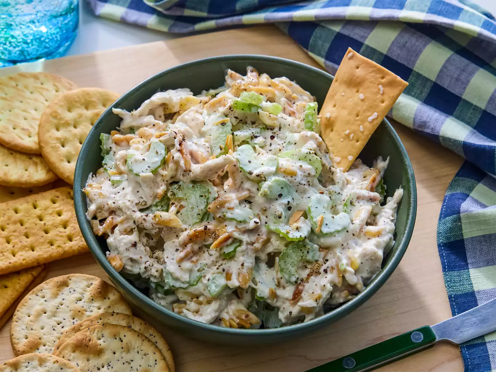

Chicken Salad

Description
Ingrediants
- ½ cup blanched slivered almonds
- ½ cup mayonnaise
- 1 tablespoon lemon juice
- ¼ teaspoon ground black pepper
- 2 cups chopped, cooked chicken meat
- 1 stalk celery, chopped
Steps
- Gather all ingredients.
- Place almonds in a frying pan. Toast over medium-high heat, shaking frequently. Watch carefully, as they burn easily.
- Mix together mayonnaise, lemon juice, and pepper in a medium bowl.
- Toss with chicken, toasted almonds, and celery.
- Enjoy!
Chef John's 22 Best Shrimp Recipes
From Hawaiian-inspired garlic shrimp tp cajun Favorites, Southern staples, and Italian and Spanish classics-they're all here!
Home